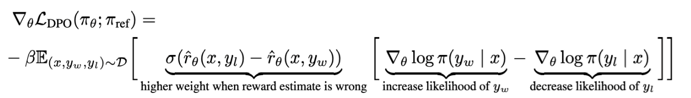

RLHF
这是笔者初次学习RL & RLHF时的一些笔记草稿。
一、目标函数：从策略梯度到 PPO
强化学习中的两个重要函数
动作价值函数 衡量的是在给定策略 下，智能体从状态 开始，并采取特定动作 后，预期能获得的累积折扣奖励（Expected Discounted Return）。（如果我在状态 选择了动作 ，然后从下一步开始严格遵循策略 ，我预期能获得多少总回报？）
状态价值函数与动作价值函数的关系：
状态价值函数 是在状态 下，所有可能动作的 值的加权平均，权重是策略 选择这些动作的概率，是 的期望。即，一个状态的价值 等于你在这个状态下，根据策略 选择所有动作的平均价值。
可以用 来递归定义，这是 函数的贝尔曼方程（Bellman Equation）的核心：
即，在状态 采取动作 的价值 ，等于即时奖励 加上下一个状态 的折扣价值 。
Vanilla Policy Gradient
策略梯度是强化学习中最基础的一类方法，它直接学习和优化策略 。
训练
在第 次训练迭代中，算法使用上一次迭代得到的当前策略网络 。这个策略 被用来与环境进行交互，通常是进行一整条轨迹（episode）的采样，或者采样固定数量的步骤 。
每一步的动作选择： 在环境的每一步中，策略网络 接收当前的状态 作为输入，然后根据其当前的策略 来采样或选择11 对于离散动作空间，策略网络通常输出一个概率分布 。算法会根据这个概率分布随机采样（抽样）得到实际执行的动作 。对于连续动作空间，策略网络通常输出一个均值 和一个方差 ，构成一个高斯分布，算法会从 这个分布中随机采样得到实际执行的动作 。一个动作 。
执行与记录： 选定的动作 被送给环境执行。环境返回一个新的状态 和一个奖励 。这一步的状态-动作对 以及后续计算所需的奖励（如优势函数）被记录下来。最终得到的数据集即为 。
计算目标函数，利用梯度上升策略最大化目标函数 （也就是下面推导出的 ），调整策略参数 ，使得在状态 下选择更优的行动 的概率更大，从而提高整体的累积奖励。
策略梯度定理
强化学习的最原始的目标是希望一个策略平均来看能够带来更大的总回报，即最大化策略 下的累积奖励的期望值，也等价于起始状态 在策略 下的状态价值函数 ：
（上式我们用 表示轨迹 下的累积奖励 。）
会产生无数个发生概率各不相同的轨迹 （概率分布记为 ），在不同轨迹下的累积奖励 也不同，因此 是一个非常复杂的期望值。虽然难以计算，但我们可以用大数定律（蒙特卡洛方法）无偏地近似这个期望。
理论上我们求 并应用梯度上升策略就可以实现最大化这个目标函数：
但问题在于，一条完整轨迹 的概率 是每一步环境转移概率 和智能体动作选择概率 的连乘：
由于表达式中含有未知的环境转移概率，因此即便我们解析地写出 的完整形式，也因为连乘导致导数解析式中含环境转移概率，由于不知道环境转移概率，导致导数值不确定。即 是不可计算的。
为了巧妙避开环境转移概率及其导数，我们注意到，如果我们把 改写成 的形式，就可以把连乘变成加法。由于环境转移概率与 无关，这样它们就会从导数表达式中消失。
又注意到 ，我们得到了
恰巧地把 写成了一个期望的形式：
轨迹概率可以逐步拆开为单步的形式：
而同时，考虑到因果性（Causality），虽然 是整条轨迹的回报，但我们知道在时间步 采取的动作 ，只能影响其之后的奖励，而不能影响其之前的奖励。因此，对于在时间步 发生的事件 来说，我们只需要考虑从 时刻开始的未来回报，即累积奖励 即可：
这样我们巧妙避开了环境转移概率及其导数。我们终于可以用大数定律（蒙特卡洛方法）无偏地近似这个期望，从而求得 的估计值了。
我们发现这个表达式其实正好是另一个函数的梯度：
因此，在实际实现中，我们优化的目标函数就是它了。我们通过最大化这个目标函数来间接地最大化原始的累积奖励期望 。
上面的推导过程又称为策略梯度定理（Policy Gradient Theorem）。
优势函数
即使使用 ，蒙特卡洛估计的方差仍然非常大。这是因为 随每一次采样的轨迹而剧烈变化。高方差意味着训练不稳定，收敛速度慢。
因为对于任何不依赖于动作 的函数 ，以下恒等式成立：
这表明在梯度中减去 不会改变梯度的期望（保持无偏性）。
为了降低方差，我们可以在不改变期望梯度 的前提下，引入一个基线函数 ，并将权重 替换为 ，移除 中与动作选择无关、只与状态本身有关的随机波动。
理论上，能最大限度降低方差的最优基线就是状态价值函数 。【推导很复杂】
代表在状态 下，智能体平均能获得的长期回报。所以将 替换为 。
总结：目标函数
因此，目标函数为
其中
- 是优势函数（Advantage function），它告诉我们在状态 下采取行动 比平均行动好多少。
- 优势函数中， 是实际观测到的当前时刻直到回合结束的累积奖励，由未来每个状态 下采取行动 得到的逐状态奖励 和一个折扣因子 组成，评估未来可能获得的总体回报。过去的奖励是不可改变的历史，与我们现在决策的价值无关。折扣因子的存在，则确保了即时奖励比遥远的未来奖励价值更大「现在比未来更有价值」。
- 是一个基线（baseline），通常取 的平均值或其他估计值。这样当优势函数为正时，可以认为该行动比平均行动好，最大化目标函数；反之则是最小化目标函数。引入基线的目的是降低梯度估计的方差，从而让训练更稳定。
重要性采样
On-policy / Off-policy 与重要性采样
On-policy：学习的智能体与和环境交互的智能体是同一个。
Off-policy：学习采取行动的智能体和与环境交互的智能体是不同的。
On-policy 方法的数据利用效率低。主要原因是其数据的「新鲜度」要求极高且不可复用。
在 On-policy 学习中，用于更新策略 的数据，必须是由当前策略 自身与环境互动所采集的。策略更新后，数据即刻作废（Staleness），每进行一次策略 的更新，旧策略 采集到的数据就不能再用于训练新策略 。因为如果继续使用，就会违背「更新策略 的数据，必须是由当前策略 自身采集」的原则，导致训练的目标和实际数据的分布不一致，从而可能引起偏差（Bias）或高方差（High Variance），甚至使训练不稳定。
对于策略 与环境互动所采集的数据，在强化学习中，通常是指完整的轨迹（Trajectory） 。在基于梯度（如策略梯度）的方法中，这些数据用于计算策略梯度 的期望。
上面的环境交互通常是强化学习中最耗时的部分，每次更新都需要重新进行大量采样，导致总训练时间很长。
为了用旧策略 （行为策略）的数据来计算新策略 （目标策略）下的期望，我们引入重要性采样。
重要性采样是一种统计学工具，其核心作用是允许我们使用一个不同的概率分布（Off-policy）来估计目标概率分布（On-policy）下的期望值。
假设我们有两个概率分布 和 ，我们想要计算在分布 下的某个函数 的期望值 。如果直接从 采样困难，我们可以从另一个更容易采样的分布 进行采样，并通过调整权重来获得正确的期望值：
其中 被称为重要性权重（Importance Weight）。
Off-policy 应用： 我们因此可以引入两个分布：
- 目标分布 ： 是当前要优化的策略 （Target Policy）。
- 采样分布 ： 是用于收集数据的策略 （Behavior Policy）。
通过重要性采样，我们可以用由行为策略 采集的数据（Off-policy 数据）来估计目标策略 的期望，从而实现 Off-policy 学习。
Off-policy 的策略梯度估计
在 off-policy 学习中，我们从与正在优化的策略不同的其他策略中采样轨迹。像近端策略优化算法（PPO）和广义近端策略优化算法（GRPO）等流行的 PG 的 off-policy 变体，会使用来自 的轨迹来优化当前策略。Off-policy 的策略梯度估计是
这看起来像是 Vanilla PG 的重要性采样版本。
TRPO 与 PPO
从 Off-policy 的策略梯度估计出发，我们可以构造新的目标函数，使得其导数即为这个公式。
TRPO 给出了一种构造方式
使得 。
然而，TRPO 虽然有理论上的单调改进保证，但其带硬性约束的优化问题计算复杂（需要二阶近似、共轭梯度和线性搜索等）。
PPO（Proximal Policy Optimization，近端策略优化）旨在保留 TRPO 限制策略更新幅度的优点，同时大大简化优化过程。
PPO 通过修改目标函数，将 TRPO 的硬性 KL 约束替换为一种软性约束（PPO-KL）或截断机制（PPO-Clip，最常用），使其可以使用标准的一阶优化方法（如 SGD 或 Adam）进行优化。
PPO-Clip：引入了一个截断函数，将概率比率 限制在一个范围 内。
其中 。
PPO-KL / PPO-adaptive Penalty：更直接地模仿 TRPO 的 KL 散度约束，但将其作为目标函数中的惩罚项而不是硬性约束。
其中 是一个自适应的惩罚系数。如果新旧策略的平均 KL 散度 大于目标 KL 阈值 ，则增大 以更严格地惩罚策略变化。
GRPO
GRPO 是一个更通用的策略优化框架，它推广了 TRPO 和 PPO。它允许使用各种不同的距离度量（不限于 KL 散度）来定义新旧策略之间的信任区域，并提供了一种统一的、可扩展的方法来计算其梯度和更新。（关于 GRPO 的另一份介绍，可参见 HW3 的 README。）
Advantage estimation. The core idea of GRPO is to sample many outputs for each question from the policy and use them to compute a baseline. This is convenient because we avoid the need to learn a neural value function , which can be hard to train and is cumbersome from the systems perspective. For a question and group outputs , let be the reward for the -th output. DeepSeekMath and DeepSeek R1 compute the group-normalized reward for the -th output as
where is a small constant to prevent division by zero. Note that this advantage is the same for each token in the response, i.e. , so we drop the subscript in the following.
GRPO objective. The GRPO objective combines three ideas:
- Off-policy policy gradient;
- Computing advantage with group normalization;
- A clipping mechanism, as in PPO.
The purpose of clipping is to maintain stability when taking many gradient steps on a single batch of rollouts. It works by keeping the policy from straying too far from the old policy.
The GRPO-Clip objective uses a min function to clip the probability ratio, preventing the policy from deviating too far from the old policy during training. Let us first write out the full GRPO-Clip objective (Eq.29):
The hyperparameter controls how much the policy can change. To see this, we can rewrite the per-token objective in a more intuitive way. Define the function
We can rewrite the per-token objective as
We can now reason by cases. When the advantage is positive, the per-token objective simplifies to
Since , the objective goes up if the action becomes more likely under , i.e. if increases. The clipping with min limits how much the objective can increase. So the policy is not incentivized to go very far from the old policy .
Analogously, when the advantage is negative, the model tries to drive down , but is not incentivized to decrease it below .
二、Actor-Critic 架构
TL; DR
PPO 不止在目标函数上优化了策略梯度方法，还引入了新的算法框架 Actor-Critic 架构，用神经网络建模价值函数。
Actor-Critic 架构
Actor-Critic (AC) 架构是一种强化学习 (RL) 算法的通用框架，混合了策略梯度和 Q-learning（价值函数估计）的思想。Actor-Critic 在原始策略梯度架构的基础上，用神经网络建模价值函数（即「价值网络」）。
策略网络（Actor，执行者）负责学习和输出策略 ，即在给定状态 下采取动作 的概率分布。训练时，通过 Actor-Critic 架构中 Critic 提供的优势函数或价值估计来更新策略，目标是提高能获得更高奖励的动作的概率：
价值网络（Critic，评论家）负责估计价值函数，目标是准确地预测给定状态的价值 ，用于评估当前 Actor 所采取策略的好坏。这通常是一个回归问题。训练时，通过时间差分（Temporal Difference, TD）学习方法，最小化其价值估计与实际观察到的回报之间的误差：
这里， 是用于训练 Critic 的目标回报（Target Return）。这可以是实际的累积奖励、TD 目标、或广义优势估计（GAE）等。
因此，PPO 算法中的总损失函数即为
熵 （对应 ）是可选的正则化项，用于增加策略的探索性。它通过在策略损失中添加一个项来最大化策略 的熵。
工作流程简述 Rollout → Reward → Advantage
- Actor 在当前状态 下根据策略 选择一个动作 。
- 执行动作 ，环境返回奖励 并转换到下一个状态 。
- Critic 使用观察到的奖励 和下一个状态 的估计价值 来计算 TD 目标和 TD 误差（或优势函数 ）。
- Critic 使用 TD 误差来更新自己的价值网络参数。
- Actor 使用 Critic 提供的优势函数 作为其策略梯度更新的方向和大小的指导（替代了纯 PG 中需要等到完整 Episode 结束后才能计算的蒙特卡洛回报）。
三、用 Bradley–Terry 建模人类偏好
小测考察内容：RLHF, Reward Model, PPO, DPO
TL; DR
为了把人类反馈作为奖励，我们借鉴经济学的概念，建模人类偏好，在人类偏好数据集上，使用神经网络建模奖励（回报）函数，最终形成了用于 RLHF 的 PPO 框架。
人工设计奖励函数的缺陷
在上文「Actor-Critic 架构」一节中，用于训练 Critic 的目标回报 是采用人工设计的 TD 和 GAE 进行估计的。
TD 和 GAE 是人工设计的用于解决信用分配问题和优化价值估计的算法机制，但在处理复杂、主观、或安全目标时，面对这些开放性问题，设计一个很好的奖励函数是很困难的。
稀疏奖励问题（Addressing Sparse Rewards）
在许多任务中，只有在完成任务的终点才能获得奖励（稀疏奖励）。这使得 Critic 很难学习，因为大多数状态的 TD 误差都是零。
好处：奖励模型（RM）可以为每个时间步或每个输出 token 提供一个连续的、密集的奖励信号 ，即使这个信号是基于人类对整个轨迹的评价。这个密集的信号能显著提高 Critic 网络的训练效率。
奖励模型
我们可以使用人类反馈来训练一个奖励模型，来替代简单奖励或人工设计价值函数。奖励模型是一个独立的神经网络，它的目标是学习人类偏好的评估函数 。
奖励模型通常由 LLM 主体和一个价值头（value head）组成。这意味着它复用了 LLM 强大的理解能力来评估文本。
- 输入：提示（prompt, ）+ 模型生成的回答（response, ）
- 输出：标量输出作为奖励。这个标量值就是对输入 组合质量的估计分数。
Bradley–Terry 与奖励模型训练
然而，人类反馈反映的是人类的意图，我们无法直接建模意图本身。受到基于偏好的强化学习（Preference-based RL, PbRL）的启发，我们转向建模人类的偏好，并期望将人类的偏好数据转化为一个评分器。
我们需要基于偏好排序数据而非直接的评分，来训练一个需要直接给出分数的奖励模型。训练的目标是要迫使 RM 为人类偏好的回答给出更高的分数，在此情况下，这个目标就可以转化为提高「模型觉得人类偏好的回答更好」事件发生的概率：
Bradley–Terry 模型可以在给定两个对象的效用分数的情况下，计算最终偏好结果的概率分布，从而把人类偏好和效用分数值联系在一起。具体而言，下面的公式表示一个人觉得 比 好的概率。其中 和 是「效用函数」——在 RM 中，就是模型 的输出（奖励分数）：
如果将 Bradley–Terry 模型应用到人类对模型两个输出 A 与 B 的偏好上，我们得到这样一个具体的形式
它表示回答 比回答 好的概率，依赖于两个回答分别的「效用值」。这个值就可以是奖励模型给 和 打的分数 和 了。
从而，「『模型觉得人类偏好的回答更好』事件的概率」就被 Bradley–Terry 模型建模了。由于我们可以显式地计算这个事件的概率，因此我们可以使用负对数似然，从而损失函数可以设计为
其中：
- ：人类偏好数据集，其中 代表在提示 下，回答 被人类标注者认为优于回答 。
- ：Sigmoid 函数，用于将分数差转换为概率。
- ：优秀回答和较差回答之间的奖励分数差。
通过最小化这个损失函数，迫使 RM 为人类偏好的回答 给出更高的分数，从而使其输出的分数差能够准确预测人类的偏好概率。
RLHF Pipeline
上文「策略梯度定理」一节提到，强化学习的最原始的目标是希望一个策略平均来看能够带来更大的总回报，即
其中 表示轨迹 下的累积奖励。在 RLHF 框架下，。结合 KL-正则化，我们可以设计出下面的 RLHF 损失函数
其中 用于约束当前策略 的最终分布，防止模型遗忘，是一个人工构造的正则化项。
整个基于人类反馈的强化学习的流程，即包括：
- 预先在人类偏好数据集上，按照上面的介绍，训练一个奖励模型；
- 利用训练好的奖励模型构造如上损失函数；
- 按照 PPO 的训练思想，但使用上面的损失函数，强化学习微调主模型。
四、Direct Preference Optimization
TL; DR
PPO 首先基于提示和人类偏好数据集训练一个奖励模型，然后使用强化学习找到最大化该奖励模型的策略。
DPO 通过数学推导证明，最优策略 与参考模型 之间的对数比，与奖励 存在直接的解析关系。DPO 利用这一关系，直接构造了一个损失函数，允许模型 在没有显式奖励模型的情况下，通过最大化高质量回答相对于低质量回答的对数概率比（基于 ），一步到位地优化策略，从而规避了训练奖励模型和使用复杂 RL 算法带来的训练不稳定性。
DPO 在优化人类偏好的同时避免了强化学习。DPO 通过一个简单的分类目标，直接优化最符合偏好的策略，拟合一个隐式奖励模型，该模型的最优策略可以通过封闭形式直接提取。
| 方法 | 训练步骤 | 模型 | 训练方式 | 优点 | 缺点 |
| RLHF | 先训练奖励模型，再使用 PPO 优化策略 | , , , | 强化学习和在线采样 | 充分利用人类偏好，上限潜力较高 | 资源消耗大、训练不稳定、超参数敏感 |
| DPO | 直接利用偏好数据训练 Actor 模型 | , | 类似 SFT 监督学习 | 流程简化、训练稳定、资源消耗低 | 性能提升上限可能低于 RLHF |
Derive the DPO Objective
这一节主要讲解 DPO 的推导过程。
Theoretical Analysis of RLHF Objective
在大规模语言模型对齐中，我们希望利用人类反馈强化学习（RLHF）来优化模型输出。输入 来自数据集 ，模型生成回答 ；待训练的模型记为 ，而参考模型记为 （通常为 SFT 模型），同时引入奖励函数 衡量回答质量。在上文「RLHF Pipeline」一节中，我们推导了 RLHF 的目标是
其中 为调节奖励与参考模型偏差的超参数。利用 KL 散度的定义
式 (1) 可重写为
将上式转换为最小化问题并除以 即得
假设存在一个最优策略分布 使 (4) 式全局最优，利用拉格朗日乘子法求得最优策略分布满足如下形式。基于变分法，可令
其中配分函数 为了实现最优策略分布的归一化，定义为
注意到：
- 对所有可能的 求和，实现归一化，使得 构成合法的概率分布。
- 是 的函数，与待优化的 Actor 模型 无关。
对 (5) 式取对数得到
反推奖励函数，发现其与最优策略的对数比有关
Direct Preference Optimization
这一节很重要。在 PPO 等 RL 方法中，我们通过预先训练一个奖励模型 ，通过梯度方法近似下面的解析解找到该奖励模型条件下的最优策略 ：
DPO 引入了对奖励模型的另一种参数化方法。因为我们最终需要的是这个最优策略，那不妨假设我们能够不依赖奖励模型就找到这样一个最优策略。我们先把要优化的策略参数化，通过找到最优化的策略，导出适合这个最优策略的奖励模型22 因为我们最终并不真的需要这样一个奖励模型了，它在这里更多是一个理论分析的概念，所以我们称为「隐式」奖励模型。，即
DPO Loss
将上式代入上文「Bradley–Terry 与奖励模型训练」中标为 ★ 的损失函数，在成对比较中，对于相同输入 ，两个回答 和 均包含相同的 项，因此在计算奖励差值时，该项会被消去。这样，我们就可以把 RLHF 损失函数简化为只与 有关了。
我们最终得到 DPO 的损失函数
该损失函数针对待训练 Actor 模型 而设，通过比较其在高质量回答 与低质量回答 上、相对于参考模型 的对数概率比来区分好坏回答。
直观地看这个损失函数的合理性：
- 当 在 上的相对概率比远大于 时， 输出更接近 ，损失更小；
- 反之，若 对 的相对概率权过大，则损失增加；
- 参数 用于放大或缩小这些对数比的差值，从而调节模型对好坏答案的区分强度。

从 来看：
- 直观地说，损失函数的梯度增加了偏好的回答的概率，并减少了不偏好的回答的概率；
- 权重衡量了隐式奖励模型错误排序的程度，优先学习那些模型做错的样本，并防止模型在已经正确的样本上过度优化；
- 是缩放程度、偏离程度，衡量 KL 距离。不用这个参数，会导致模型退化。
DPO 的理论贡献
Your Language Model Is Secretly a Reward Model.
- 无需拟合一个显式的奖励函数
- 无需执行强化学习（RL）来训练策略
- DPO 仅用一个最大似然目标来训练策略
- DPO 并不限制学习的奖励模型的类别，并且允许准确恢复最优策略
Instability of Actor-Critic Algorithms.
- DPO 能够诊断标准 Actor-Critic 算法（如 PPO）在 RLHF 中的不稳定性（ 不会影响最优策略的最终解析解，但可能导致梯度高方差和不稳定性）
- DPO 重参数化方法将优化问题完全转换到了似然域，消除了对价值和基线的需求